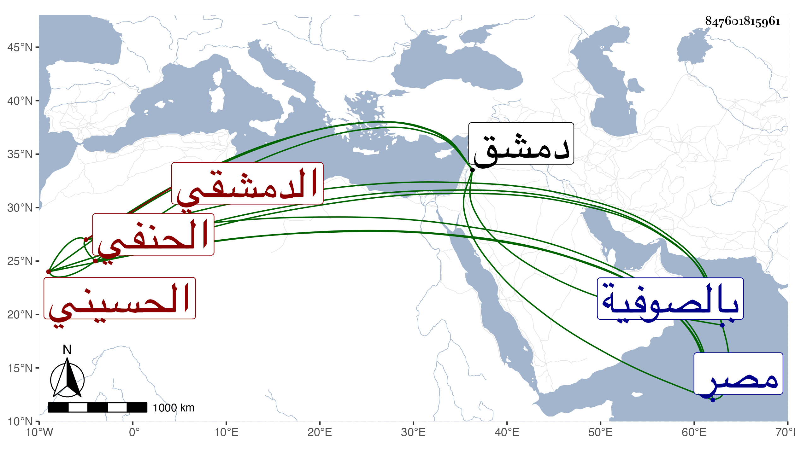

0902Sakhawi.DawLamic.ITO20230111-ara1.EIS1600.847601815961
Biography ID: 847601815961
132
أبو بكر بن علي بن إبرهيم بن عدنان بن جعفر العماد الحسيني الدمشقي الحنفي أخو أحمد ووالد ناصر الدين محمد الماضيين وهذا أصغر الأخوين . ولد في رجب سنة خمس وسبعين وسبعمائة واشتغل في الفقه والنحو وسمع الحديث وكتب الخط الحسن وتقدم في الإنشاء وتزيا بزي الجند ثم المباشرين وباشر أيام أخيه نيابة كتابة سر دمشق ثم ولي حسبتها في سنة ست وعشرين ثم عزل عنها في ربيع الآخر من التي تليها وبيده مشيخة الجقمقية وتدريس الريحانية والعذراوية والمقدمية ولما ولي أخوه كتابة سر مصر طلبه لمساعدته فتوجه إليه في صفر سنة ثلاث وثلاثين فأقام على كره منه وربما باشر النيابة عنه مع كونها باسم الشرف ابن العجمي وكان الغالب عليه الديانة والخير والعفة ولذا انطلقت الألسن بالثناء عليه وعين بعد أخيه لكتابة السر وباشر بدون تولية فعوجل بالطاعون أيضا بعد ستة عشر يوما مضت لأخيه وذلك في ليلة الجمعة ثالث عشر رجب سنة ثلاث وثلاثين وأخرج قبل الصلاة ودفن بالصوفية بوصية منه وكانت جنازته حافلة بخلاف جنازة أخيه رحمه الله ذكره شيخنا في أنبائه باختصار .
